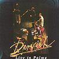

Celtic Lyrics Corner > Artists & Groups > Dervish > Live In Palma > I Courted A Wee Girl
|  | I Courted A Wee Girl |
| Credits : | n/a |
|
a) I Courted A Wee Girl
b) Josefin's Waltz |
|
| Appears On : | Live In Palma |
| Language : | English |
Lyrics :
I courted a wee girl for many's the long day
And I slighted all others that came in my way
But now she's rewarded me to the last day
She has gone to be wed to another
The bride and bride's party to church, they did go
The bride, she rode foremost, she put the best show
And I followed after with a heart full of woe
To see me love wed to another
The bride and bride's party in church, they did stand
Gold rings on their fingers, a love by the hand
The man she is wed to, he has houses and land
He may have her since I couldn't gain her
The next time I saw her, she was seated down neat
I sat down beside her, not a bite could I eat
For I thought me love's company far better than meat
Since love was the cause of my ruin
The last time I saw her, she was all dressed in white
The more I gazed on her, she dazzled my sight
I lifted me hat and I bade her good night
Here's adieu to all false-hearted lovers
I courted that wee girl for many's the long day
And I slighted all others that came in my way
But now she's rewarded me to the last day
She has gone to be wed to another
So dig me a grave, and dig it down deep
And strew it all over with primrose so sweet
And lay me down easy, no more for to weep
Since love was the cause of my ruin